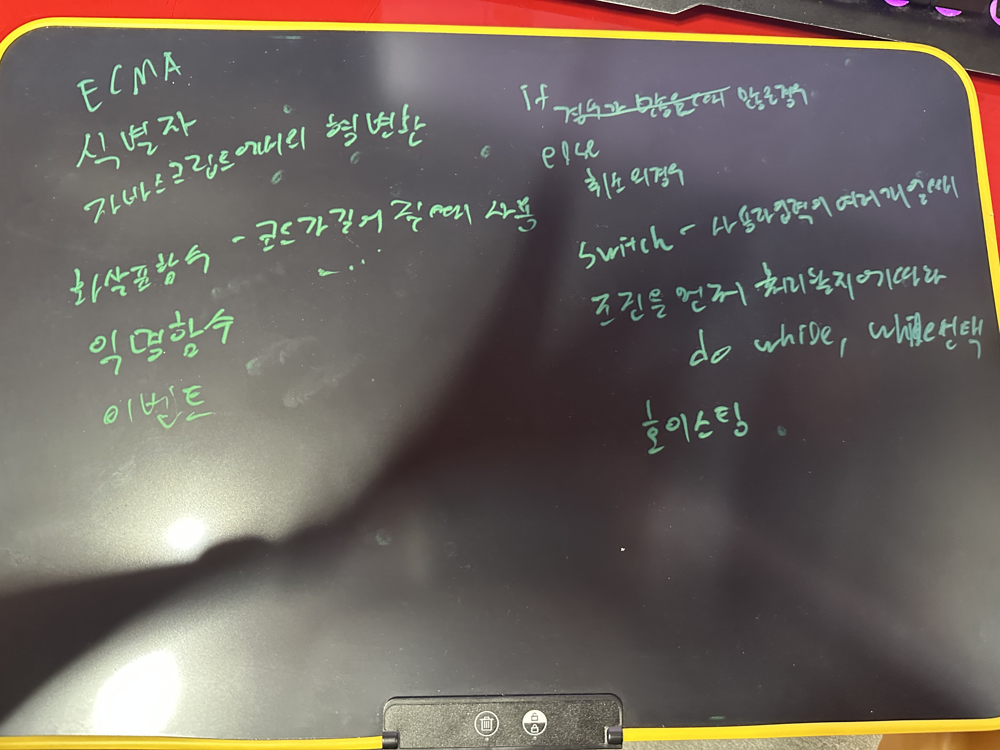
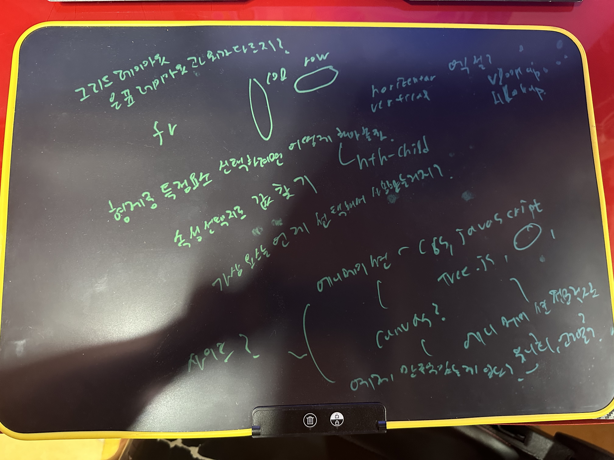
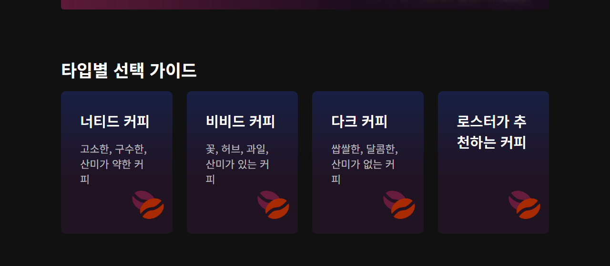
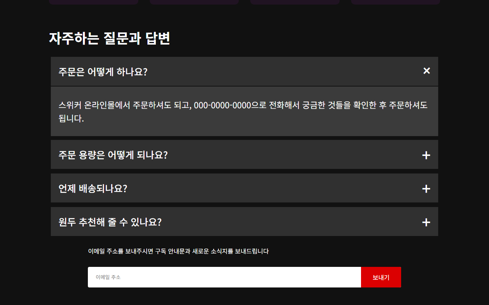

PROJ_02 · 완료 2025년 3월 29일 오후 2:08
원두 정기 구독
Do it! HTML+CSS+자바스크립트 웹 표준의 정석 폴더 「넷플릭스 사이트 따라만들기」로 만든 정적 랜딩입니다. 화면 내용은 스위커 원두 구독 안내이고, 헤더·배너·카드·FAQ·푸터를 HTML과 CSS로 구성했습니다. 아래 화면은 2026년 10월 17일에 Project/index.html을 브라우저에서 연 것입니다.
추가 학습 자료
proj_02_add_doc의 확인 질문, 필기, 영상 강의 요약, 마인드맵입니다. 책과 강의 본문은 옮기지 않고, 문서에 적힌 범위만 모았습니다.
-
확인 질문
1장부터 5장입니다. 웹 표준과 HTTP, 시맨틱 태그, 텍스트·목록·표·이미지·링크, 폼 요소를 스스로 답해 둔 기록입니다.
-
CSS 필기
6장부터 194쪽입니다. 마진 상쇄와 스타일 상속, 사용자·제작자·브라우저 스타일을 적었습니다.
-
자바스크립트 필기
15장부터 17장과 마지막 객체 장입니다. var와 let, 호이스팅, 배열 메서드, querySelector, DOM 노드를 적었습니다.
- 1–5장 확인 질문 답변해보기.txt
- CSS CSS 부분 책읽으면서 필기 6장부터 p194 까지.txt, p194 짧은 메모
- JS 자바스크립트 부분 필기 15 ~ 17당.txt, 자바스크팁트의 객체 필기 마지막장.txt
- 체크 Do it HTML+CSS+JAVASCRIPT 중요할 것같은것 체크하기.docx. 웹 접근성, 미디어쿼리, 박스, 호이스팅, truthy, DOM, 사용자 정의 객체를 골라 두었습니다.
- 영상 전면개정판 영상 강의 요약. 뤼튼으로 정리한 docx와 pdf. 앞부분은 2장부터 19장 실습 파일을 받는 방법입니다.
- 지도 웹 표준의 정석 나 의마인드 맵.drawio.html
필기 사진


실행 화면
2026년 10월 17일, Project/index.html을 브라우저에서 열어 찍었습니다. 문서 제목은 「원두정기구독독」이고, 머리글 문장에 「스페셔ㅛㄹ」이 그대로 있습니다. 같은 폴더의 complete.html은 제목을 「원두 정기 구독」으로, 그 문장을 「스페셜」로 다듬은 사본입니다. FAQ 화면은 첫 질문을 연 상태입니다.



간단 설명
한 페이지 랜딩입니다. 헤더는 화면 높이를 채우고, 원두 사진 위에 구독 문구와 이메일 폼을 올립니다. 이어서 로스팅 안내, 로스트 선택, 회원 혜택, 원두 타입 카드, 질문 목록, 소식지 폼, 매장·고객센터·커뮤니티 푸터가 이어집니다.
질문 목록은 자바스크립트 파일이 아니라, 같은 이름의 라디오 버튼과 CSS로 열고 닫습니다. 아이콘은 Font Awesome CDN입니다. 배경과 카드 이미지는 images/header-bg.jpg, images/membership-bg.png, images/beans.png입니다.
사용 도구
-
HTML
header, section, form, select, 라디오 FAQ, footer를 한 파일에 적었습니다.
-
CSS
style.css. 플렉스 배치, 100vh 헤더, 768px과 1220px 구간 반응형.
-
Font Awesome 6
언어 버튼의 지구본과 푸터의 인스타그램, 페이스북, 유튜브 아이콘.
-
자바스크립트
랜딩에는 스크립트 파일이 없습니다. 15–17장과 객체 필기, 확인 질문에 학습 내용이 있습니다.
-
VS Code
확인 질문에 편집기와 라이브 서버, 개발자 도구로 문서를 확인했다고 적혀 있습니다.
-
뤼튼
영상 강의 요약을 정리할 때 뤼튼을 사용했습니다.
실행 환경
핵심 기능
| 구역 | 하는 일 |
|---|---|
| 헤더 | 로고, 언어 버튼, 로그인 버튼, 이메일 구독 폼. 높이는 뷰포트 전체입니다. |
| 배너 | 매주 로스팅 안내와 자세히 알아보기 버튼, 라이트·미디엄·다크 로스트 선택. |
| 멤버십 | 온라인몰 3% 할인과 5,000원 상품권 안내. |
| 선택 가이드 | 너티드, 비비드, 다크, 로스터 추천 카드. 화면 너비에 따라 1열, 2열, 4열. |
| FAQ | 주문, 용량, 배송, 추천. 라디오를 고르면 해당 답만 열립니다. |
| 푸터 | 매장 안내, 고객센터, 커뮤니티, 저작권. 768px 이하에서는 세로로 쌓입니다. |
파일에서 이은 기록
- index.html 제목 「원두정기구독독」, 버튼 글자는 「궁금해요」. 머리글에 「스페셔ㅛㄹ」이 있습니다.
- complete.html 제목 「원두 정기 구독」, 버튼 글자는 「보내기」. 머리글은 「스페셜」입니다. 스타일은 같은 style.css를 읽습니다.
- 상호 푸터의 상호, 대표, 전화, 사업자 번호는 XXXXX와 000으로 비워 둔 예시입니다. 주소는 제주특별자치도 제주시 해안마을 5길, 저작권 표시는 스테이위드커피입니다.
- 스크립트 프로젝트 폴더에 .js 파일은 없습니다.